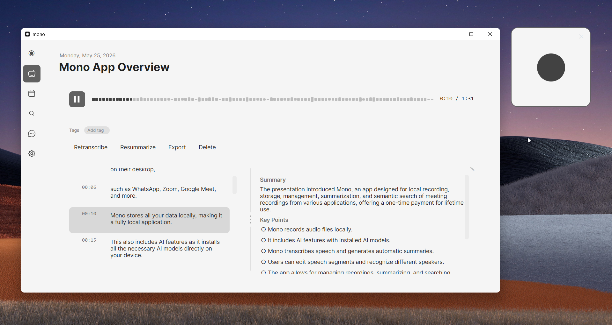

Slack Huddles are made for quick calls, but they have one obvious gap: there is no Record button. Slack can't save a huddle as an audio or video file you can replay later — not on the free plan, and not even on Enterprise Grid. If you want a recording or a transcript you can actually keep, you need a separate tool.
This guide covers every method that actually works for recording a Slack huddle in 2026 — including ways to capture the call locally, with transcription, and without anyone in the huddle seeing a bot.
TL;DR
- Best overall: mono — no bot, local AI transcription, works with external guests, $50 once
- Best free: OBS Studio — no bot, captures audio + screen share, needs setup, no transcription
- Native (limited): Slack AI Notes — paid plans only, a summary not a recording, no external guests
- Quick & free: Windows Game Bar / Mac QuickTime — screen capture, fiddly audio, no transcription
Does Slack have built-in recording?
Short answer: no. Slack Huddles have no native recording on any plan — there is no button that produces an audio or video file of a live huddle. Two features come close but are not recordings:
Slack AI Notes. On paid plans (Business+ and Enterprise Grid) with Slack AI enabled, Slack can generate a summary and a rough transcript after a huddle ends. These land in a canvas attached to the huddle thread. It's notes, not a saved call — there's no audio file, the transcript isn't searchable across your workspace, it's not available in huddles with external guests, and an admin can switch it off.
Clips. Slack Clips let you record a short asynchronous message — audio, video, or screen, up to 5 minutes. They're for leaving a message, not capturing a live huddle, and they have no speaker labels.
So if you want a real recording of a live huddle — something you can replay, archive, or get a full transcript from — you'll use one of the methods below.
Quick Comparison
| Method | Price | Bot/Visible? | Transcription |
|---|---|---|---|
| mono | $50 once | No | Yes (local) |
| Granola | From $18/mo | No | Yes (cloud) |
| OBS Studio | Free | No | No |
| Game Bar / QuickTime | Free | No | No |
| Slack AI Notes | Paid plan | Native | Summary only |
Granola is the closest bot-free alternative and a capable notetaker, but it's a monthly subscription, processes your audio in the cloud, and won't even let you export the audio itself — where mono is a one-time purchase and every file, audio and transcript, stays yours on your machine. The rest of this guide focuses on getting an actual recording.
Method 1: mono (Recommended)
mono records a Slack huddle by capturing the audio coming out of your computer. It doesn't join the huddle, so no one sees a bot and there's no notification. Because it records system audio, it captures every participant — including external guests, which Slack's own AI Notes can't do.

mono detects when a call starts and ends, so recording and transcription happen automatically — and because the AI runs on your computer, the audio never leaves it. The transcript includes speaker labels, and every recording becomes searchable by keyword afterwards.
How to record a Slack huddle with mono
- Download mono from mono-ai.uk and install it
- Leave mono running in the background — there's no need to arm it manually
- Start or join the Slack huddle as normal — mono detects the call and starts recording automatically
- Talk, share your screen, do whatever you need
- When the huddle ends, mono stops recording on its own
- Transcription runs automatically, right on your computer
- Read, search, or export the transcript with speaker labels
Because mono captures whatever plays through your speakers or headphones, it works the same whether the huddle is audio-only, video, or a screen share — and regardless of your Slack plan.
Pros: No bot, no notification, automatic start and stop, works with external guests and on the free Slack plan, local AI transcription with speaker labels, searchable recordings, one-time $50 payment with no subscription.
Cons: Captures audio, not the video/screen as a video file; paid software (one free recording to try first).
Method 2: OBS Studio (Free)
OBS Studio is a free, open-source recorder. It doesn't join the huddle, and it can capture both system audio and your screen — useful if you want a video of someone's screen share, not just the audio.
The trade-off is setup and no transcription: OBS gives you a raw audio or video file that you'll have to transcribe somewhere else if you want searchable text.
How to record a Slack huddle with OBS
- Download OBS Studio from obsproject.com and install it
- Open OBS and go to Settings → Audio
- Set "Desktop Audio" to your playback device (speakers or headphones)
- In the main window, click + under Sources and add "Audio Output Capture" for audio-only
- To capture a screen share, also add "Display Capture" or "Window Capture"
- Click "Start Recording" before the huddle begins
- Run your huddle as usual
- Click "Stop Recording" when it ends; find the file in your Videos folder

Pros: Completely free and open source, no bot, captures screen-share video, highly configurable.
Cons: Requires setup, you must start and stop recording manually each time, no transcription — produces raw audio/video files only.
Method 3: Built-in Screen Recording (Windows & Mac)
Both Windows and macOS ship a screen recorder that can capture a huddle window. They're free and already installed — the catch is audio capture.
Windows (Xbox Game Bar)
- Press Win+G to open the Game Bar
- Open the Capture widget and click Record
- Check that system audio and mic capture are switched on
- Keep the Slack window focused during the huddle
- Stop from the Game Bar; the clip saves to Videos\Captures
Game Bar records the active app window and can be picky about capturing other participants' system audio — test it on a short call first.
Mac (QuickTime / Screenshot toolbar)
- Press Cmd+Shift+5 to open the screen-recording toolbar
- macOS can't capture system audio on its own — install a free virtual audio driver like BlackHole and route your output to it
- Select BlackHole as the recording audio source, then click Record
- Stop from the menu bar; the file saves to your Desktop by default
Without a virtual audio device, QuickTime only records your microphone — not the other participants.
Pros: Free, already on your computer, can capture video and screen share.
Cons: System-audio capture is fiddly (Mac needs extra software), no transcription, no speaker labels.
Method 4: Slack AI Notes (Native, Paid)
If your workspace is on a paid plan (Business+ or Enterprise Grid) with Slack AI, you can turn on AI Notes for huddles. After the call, Slack drops a summary and a rough transcript into a canvas in the huddle thread — no extra software needed.
This is the only native option, but it's notes, not a recording. There's no audio or video file, the transcript isn't searchable across your workspace, it doesn't work in huddles with external guests, and an admin can disable it. For internal team huddles where a summary is all you need, it's convenient.
Pros: Native, nothing to install, automatic summary and action items.
Cons: Paid plans only, no recording file, no external guests, transcript not searchable, can be admin-disabled.
Audio vs Video Huddles
Most huddles are audio, but Slack supports video and screen sharing on paid plans. Pick your method by what you actually need to keep:
Audio + transcript: mono captures the conversation and transcribes it locally. Best when you want a searchable record of what was said.
Screen share or video: OBS or your built-in screen recorder captures the visuals. Bigger files, and no transcript.
Which Method Should You Use?
Want a transcript without a bot? mono records locally and transcribes automatically, works with external guests and on any Slack plan.
Need the screen share on video? OBS Studio, or your built-in recorder, captures the visuals for free.
On a paid plan and only need a summary? Slack AI Notes is built in — just no recording file and no external guests.
Just need a quick free capture? Windows Game Bar or Mac QuickTime work in a pinch, but expect fiddly audio and no transcription.